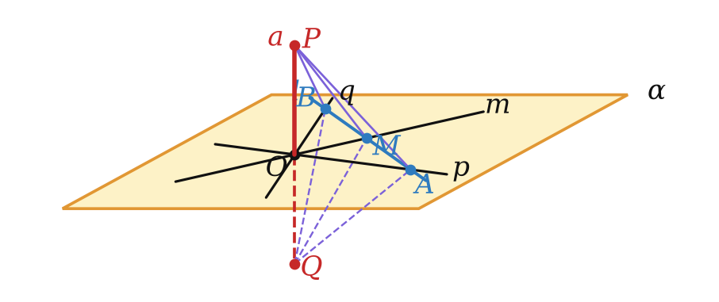
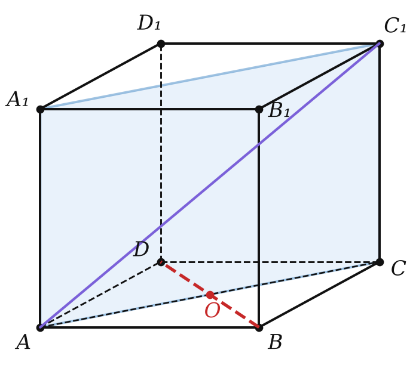
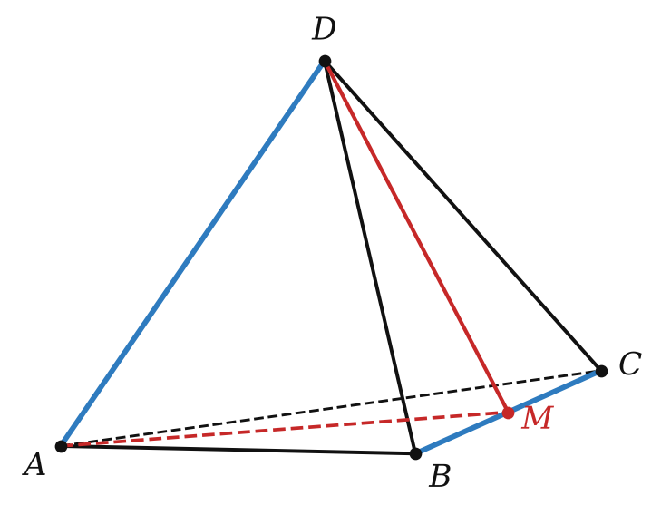

достаточно двух пересекающихся прямых
a ⊥ α означает: a ⊥ каждой прямой плоскости. Прямых бесконечно много.
Сколько прямых на самом деле нужно проверить?

⊥ двум пересекающимся ⟹ ⊥ плоскости ⟹ ⊥ любой прямой в ней


Признак — уметь доказать по рисунку